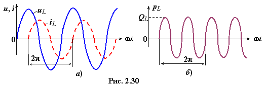

Анализ мгновенной мощности в индуктивном элементе L
'
показывает, что это знакопеременная функция, изменяющаяся с двойной частотой по
отношению к частоте изменения напряжения uL и тока iL в цепи (рис. 2.30б). Среднее значение мощности pL(t) за период T равно нулю.
В индуктивном элементе в первую четверть периода T (см. рис. 2.30а) напряжение uL и ток iL имеют знак плюс, поэтому мощность pL = uLiL > 0, т. е. индуктивный элемент потребляет электрическую энергию источника и

преобразовывает её в магнитную, накапливая её в магнитном поле катушки. Во вторую четверть периода напряжение uL и ток iL имеют противоположные знаки, поэтому мощность pL = uLiL < 0. В это время накопленная магнитная энергия возвращается источнику, преобразовываясь в электрическую энергию. В третьей четверти
происходит накопление энергии в магнитном поле элемента L, в четвертой − её возврат источнику энергии.
Интенсивность преобразования электрической энергии источника в магнитную в элементе L и обратно оценивается реактивной индуктивной мощностью +QL, которая равна амплитуде мощности pL (см. рис. 2.30б), всегда берётся со знаком плюс и измеряется в варах (вольт-ампер реактивный), т. е.
(2.57)